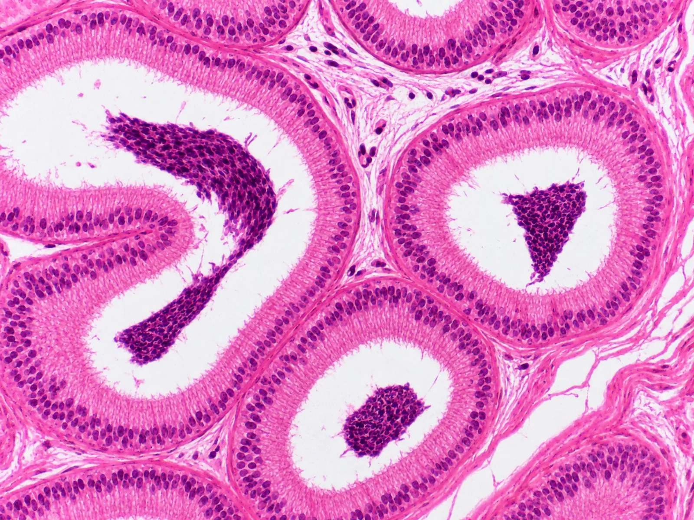

Lâmina 75 · Sistema reprodutor
Epidídimo

Toque na imagem para ampliar. No computador, use as setas do teclado para trocar de imagem.
Lâmina 75 · Sistema reprodutor

Toque na imagem para ampliar. No computador, use as setas do teclado para trocar de imagem.